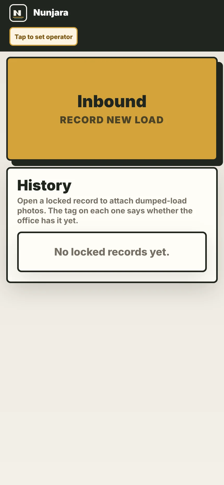
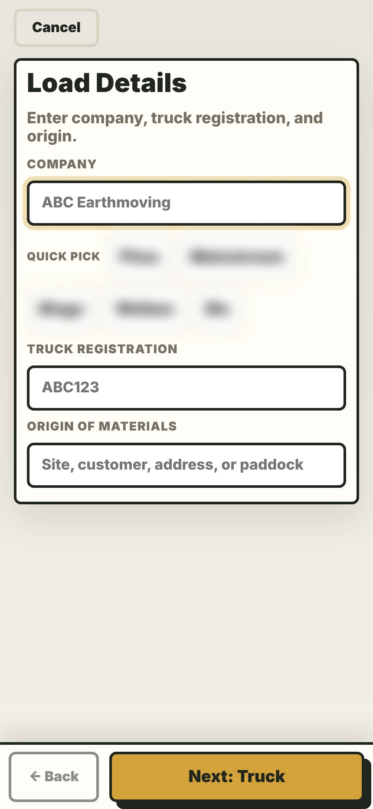

The mattress line
Twin-shaft shredders with capacity to process up to 1,400 m³ of product a day.
- Terex diesel shredders 2
- Excavators 3
- Conveyors 6
- Vibrating decks 2
- Magnets 3
- Dust extraction units 4

Chapter 05/Already built
The site, the systems and the people run today. The plastics line is the new part.
Scroll05 The site
116 Furner Avenue, North Geelong. A resource recovery centre designed and purpose-built for landfill diversion.
90+
Streams separated on site6
Days a week, undercover3
ISO-certified systems: 9001, 14001, 45001R000312600
EPA Victoria registration| EPA Victoria R000312600 | Registered with EPA Victoria |
|---|---|
| ISO 9001:2015 | Quality management |
| ISO 14001:2015 | Environmental management |
| ISO 45001:2018 | Occupational health and safety management |
| AS/NZS 5377 | Collection, storage, transport and treatment of end-of-life electrical and electronic equipment |
| NIST 800-88 | Media sanitisation (data destruction) |
05 The site, in photographs


05 What runs here today
Twin-shaft shredders with capacity to process up to 1,400 m³ of product a day.
Cardboard baling and containerised export, run from North Geelong.
No. 1
Australia’s largest polystyrene plant, on the same site.
New
Wheelie bins, bumper bars and pallets. Launches with Eco Plastics.
How it will work →05 Safety and compliance
eCheck is the group’s own safety, training and compliance app, in use at North Geelong.


Live screens from echeck.com.au, captured 10 October 2026. Nothing was submitted.
05 Tracking
The Nunjara load register logs every inbound load, and it’s the model for how Eco Plastics will track every batch.


Live screens from the Nunjara load register. Customer names blurred; nothing was submitted.
05 The group behind it
01
JUNK
Trash.
02
Recycle North Geelong
The Mattress Recycling Company
Global Steel
Eco Plastics (launching)
03
Recycle Warehouse
04
Nunjara
LG Recycling (opening)